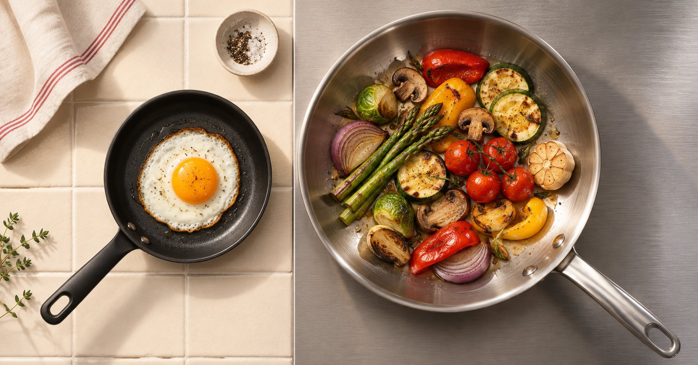

HELLO, HUMAN! COMMERCE INSIGHT 09
Shopify가 검색과 추천을
함께 학습시키는 이유
고객의 맥락을 잇는 생성형 상품 탐색

처음 자취를 시작한 사람과 식당을 운영하는 사람이 ‘프라이팬’을 검색합니다. 같은 단어를 입력했지만 필요한 크기와 수량은 다를 겁니다.
한 사람은 작은 주방에 들어갈 식기를, 다른 사람은 업소용 조리 도구를 살펴봤다면 어떨까요. 검색어만으로 알기 어려운 용도가 앞선 행동에서 조금 드러납니다.
Shopify는 2026년 11월, 검색과 추천이 같은 상품 정보와 고객 행동에서 배우도록 한 방식을 공개했습니다. 우리 서비스에서도 살펴볼 만한 질문입니다. 고객이 검색창에서 말한 것과 쇼핑하면서 보여 준 관심을 어디까지 이어서 써야 할까요? Shopify 기술 블로그
1. 어제 본 작은 팬과 오늘 찾는 큰 팬
작은 주방에 맞는 식기를 보던 고객이 ‘프라이팬’이라고만 입력했다면, 가볍고 손잡이가 분리되는 팬을 후보에 넣을 만합니다. 그런데 오늘 검색어가 ‘부모님 드릴 30cm 인덕션 프라이팬’이라면 이야기가 달라집니다. 지난번에 본 20cm 팬을 아무리 좋아했어도 이번 선물에는 크기가 맞지 않습니다.
검색창에는 고객이 지금 원하는 조건을 적을 수 있습니다. 추천 피드에는 새 검색어가 없으니 무엇을 보고 장바구니에 담았는지, 언제 무엇을 샀는지가 다음 제안의 단서가 됩니다. Shopify도 개인화 검색에는 검색어와 고객 프로필을, 추천에는 시간순으로 정리한 행동 기록을 사용합니다. 기술보고서 1.1절
우리 서비스에서 두 화면의 기록을 연결하려면 검색 결과에 노출된 상품, 조회, 장바구니, 구매에 일관된 상품 식별자와 시각을 남겨야 합니다. 이용이 허용된 기록에서 취향을 참고하되, 고객이 크기나 열원을 직접 지정하면 그 조건을 먼저 적용합니다.
2. 검색과 추천이 같은 코드로 상품을 찾는 법
상품마다 붙인 관리번호만으로는 두 상품이 얼마나 닮았는지 알기 어렵습니다. Shopify는 상품의 특징을 숫자 배열로 나타낸 뒤, 이를 세 개의 코드 조각으로 줄입니다. 이 조합을 의미 ID(Semantic ID)라고 부릅니다. 비슷한 상품은 코드 일부를 공유하기 때문에 구매 기록이 드문 상품도 비슷한 상품의 사례에서 배울 수 있습니다.

첫 코드가 같은 조끼 가운데 한쪽은 같은 브랜드끼리, 다른 쪽은 작업복 스타일끼리 모였습니다. 각 자리에 어떤 특징이 담길지는 상품 자료에서 학습하며, 세 조각이 모두 같아도 여러 상품이 연결될 수 있습니다. 모델이 검색어나 구매 이력에 맞는 코드를 만들면, 시스템은 그 코드에 해당하면서 이번 요청에 노출할 수 있는 실제 상품을 찾아 다음 단계에 넘깁니다.
학습 자료를 바꿔 보면 두 작업이 어떤 도움을 주고받는지 보입니다. Shopify가 사전학습에서 추천 기록을 빼고 그만큼 다른 자료를 늘리자, 검색 뒤 구매한 상품을 상위 10개에서 찾아낸 비율이 33.4%에서 32.6%로 낮아졌습니다. 이 실험에서는 무엇을 보고 샀는지 배운 경험이 검색에도 도움이 됐습니다. Shopify의 학습 자료 비교
그렇다면 고객이 ‘프라이팬’을 검색할 때와 Shop 앱의 홈피드를 열 때, 시스템 안에서는 무엇이 달라질까요? Shopify는 상품 표현과 사전학습을 공유하고, 실제 요청은 검색용과 추천용 모델로 나누어 처리합니다.
검색
홈피드 추천
보고서 원본 · 그림 1. 상품 코드와 학습 · 그림 5. 검색 처리와 색인 갱신
검색 모델은 직접 후보에 넣지 않은 상품의 순위에도 영향을 줍니다. 예를 들어 키워드 검색이 찾은 팬도 생성형 모델의 상위 50개 상품과 얼마나 비슷한지 계산합니다. 후속 순위 모델은 이 유사도를 결과 순서에 반영합니다. 두 운영 모델의 능력을 하나로 옮기는 작업은 별도의 실험입니다. 기술보고서 7절 · 통합 모델 실험
3. 기존 검색에 더했을 때 가장 좋은 점수가 나왔다
Shopify는 같은 검색 요청을 세 가지 구성에 넣었습니다. 아래의 OneDCG@10은 검색 결과 상위 10개의 적합도를 평가하는 점수입니다. 검색어와 고객 조건에 맞는 상품이 앞쪽에 나오면 점수가 높아집니다. 기술보고서 표 17
| 검색 구성 | 전체 검색 | 개인화 검색 |
|---|---|---|
| 기존 검색 | 30.6 | 33.0 |
| 생성형 탐색과 자체 순위 결정기 | 28.5 | 33.6 |
| 기존 검색에 생성형 탐색 추가 | 32.7 | 35.7 |
기존 검색에 생성형 탐색을 더하자 전체 검색은 2.1점, 개인화 검색은 2.7점 올랐습니다. 결합한 구성에서는 새 후보를 찾는 일과 그 후보의 순위를 정하는 데 쓸 정보를 제공하는 일이 함께 바뀌었습니다. 두 효과가 점수에 함께 들어 있습니다.
Shop 앱 홈피드에서는 실제 구매를 비교했습니다. 추천 후보를 추가한 A/B 실험에서, 영향을 받은 피드 영역에 귀속된 주문 수는 대조군 대비 7.95%, 구매 전환율은 9.85% 늘었다고 Shopify는 보고했습니다. 두 수치 모두 해당 영역의 상대 증가율입니다. 기술보고서 표 19
4. 고객에게 처음인 상품을 따로 세는 이유
어제 본 팬을 다시 보여 주면 고객이 비교를 이어갈 수 있습니다. 반면 아직 한 번도 눌러 보지 않은 판매자의 팬이 수납장에 더 잘 맞을 수도 있습니다. 본 상품을 잘 찾아 주는 추천과 고객에게 새로운 선택지를 찾아 주는 추천은 어떻게 구별할까요?
Shopify는 고객이 어떤 상품을 처음 산 기록, 어떤 판매자에게서 처음 주문한 기록, 어떤 카테고리에서 처음 구매한 기록을 학습 때 더 자주 보여 줬습니다. 평가할 때는 이전에 상호작용한 적이 없는 상품을 나중에 구매한 경우를 따로 골라, 그 상품이 미리 추천한 후보에 들어 있었는지 확인했습니다. 오래전 입점한 판매자의 상품도 이 고객에게는 첫 발견일 수 있습니다. 기술보고서 5.1.3절
무엇을 좋은 발견으로 볼지는 운영팀이 정할 일입니다. 고객의 선택 폭을 넓히고 싶다면 처음 거래한 판매자에게서 구매한 비율을, 신규 입점 판매자를 돕고 싶다면 입점 시기별 노출과 주문을 봅니다. 몇몇 판매자에게 노출이 몰리는지도 함께 살펴볼 수 있습니다.
5. 찾은 상품에서 지금 살 수 있는 옵션까지
‘가볍고 편리한 팬’이라는 상품 설명만으로는 고객이 찾는 팬인지 확인하기 어렵습니다. 지름, 무게, 열원, 손잡이 분리 여부가 있으면 판단할 근거가 생깁니다. 상세 설명에는 ‘인덕션 사용 가능’, 옵션 정보에는 ‘가스레인지 전용’이라고 쓰인 경우, AI가 충돌을 표시하고 담당자가 제조사 사양을 확인해 바로잡는 도구를 생각해볼 수 있습니다.
Shopify도 판매자에게 제목·설명·이미지·분류·옵션·가격·재고를 최신 상태로 관리하도록 안내합니다. 카탈로그는 여러 채널에 상품 정보를 제공하고, 각 채널이 어떤 상품을 어떤 순서로 보여 줄지 결정합니다. Shopify Catalog 한국어 안내
쇼핑 에이전트용 Catalog 도구도 고객이 고르는 순서에 맞춰 쓸 수 있습니다. 원하는 조건을 말하면 search_catalog로 후보를 찾고, 이미 본 상품의 최신 정보가 필요하면 그 식별자로 lookup_catalog를 호출합니다. 고객이 팬 하나를 고르면 get_product로 해당 상품의 옵션 조합과 판매 가능 여부를 확인합니다. Catalog 개발 문서
우리 검색 화면에서도 30cm 옵션을 살 수 있는지 확인한 뒤 그 옵션의 가격과 배송 조건을 보여 줄 수 있습니다. 웹 화면과 에이전트가 같은 판매 정보를 조회하고, 결제 직전에는 주문 시스템에서 조건을 다시 확인하도록 설계합니다.
6. 프라이팬 검색에서 놓친 후보부터 찾기
첫 실험은 주방용품 담당자가 결과를 직접 판별할 수 있는 프라이팬 한 종류로 좁혀 봅니다. 가설은 간단합니다. ‘좁은 수납장에 넣을 팬’처럼 용도를 말한 검색에서, 뜻이 가까운 상품까지 찾으면 기존 검색이 놓친 구매 후보를 보탤 수 있다는 것입니다.
- 후보 찾기같은 요청을 두 경로로 보냅니다기존 검색을 실행하면서 상품 설명의 의미도 검색합니다. 후자는 ‘손잡이 분리형’처럼 검색어에 없는 표현까지 찾습니다.
- 후보 합치기새 경로에서만 찾은 상품을 표시합니다상품 식별자로 중복을 없애고, 어느 경로에서 찾았는지 남깁니다.
- 조건 확인고객이 고를 수 있는 옵션을 확인합니다명시한 크기와 열원, 최신 가격·재고·배송 조건을 조회합니다. 근거가 없는 옵션은 조건 일치로 세지 않습니다.
- 결과 비교같은 방식으로 순위를 매깁니다기존 순위 결정기를 거친 상위 10개를 비교합니다. 첫 검토는 고객에게 노출하기 전에 합니다.
후보가 늘어난 이유부터 확인합니다. 두 방식의 후보 수 한도를 맞추고, 담당자가 추가 후보의 사양을 읽어 요청에 맞고 구매 가능한지 판정합니다. 과거 구매로 평가할 때는 검색 시점까지의 정보만 입력하고, 이후 산 상품이 상위 10개에 새로 들어왔는지 셉니다. 모델명이나 품번을 정확히 입력한 요청도 따로 모아 지정 상품이 밀려나지 않는지 봅니다.
고객 화면에서는 사용자 단위로 무작위 배정합니다. 기존 검색을 쓰는 그룹과 후보를 보탠 그룹에서 구매 전환율, 처음 거래한 판매자의 주문, 품절 옵션 노출, 전체 응답 시간을 비교합니다. 취소와 반품은 두 그룹에 같은 관찰 기간을 둡니다. 추가 탐색이 실패하거나 정한 응답 시간을 넘기면 기존 검색 결과를 보여 줍니다.
직접 모델을 학습할지는 이 비교 뒤에 판단해도 됩니다. 작은 팬을 두루 찾는 날에는 이전 관심이 탐색을 도와주고, 큰 팬을 선물하는 날에는 새로 적은 조건이 결과에 반영되는지부터 살펴보면 됩니다.
자료와 함께 읽기
- Shopify’s generative discovery model · Shopify Engineering, 2026년 11월 11일. 의미 ID의 실제 상품 예시와 평가 결과.
- Generative Search and Recommendation at Shopify · Shopify 연구진, 2026년 11월 15일 개정. 운영 모델 구성과 실험별 비교 조건.
- Shopify Catalog 판매자 안내 · 에이전트용 Catalog 개발 문서 · 상품 정보 관리와 옵션 조회.
함께 읽기 · 인사이트 06 · AI가 읽는 상품 정보와 실제 판매 조건
커머스 인사이트 목록으로 돌아가기